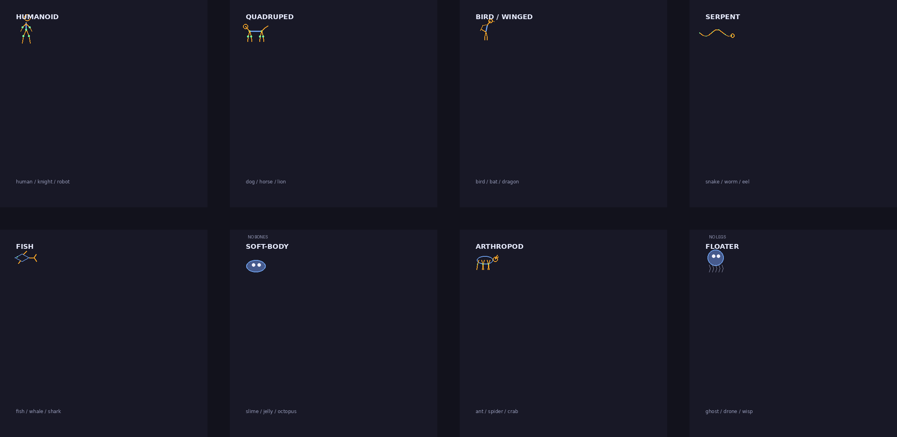

輸入任何文字 → 即時合成對應物種 · 純本地運算 · Python 骨架動畫展示
TEXT → CREATURE · 8 BODY-PLAN FAMILIES · NO SERVER同一串文字永遠生出同一隻 — 試下用自己個名！
仲未發現任何物種 — 上面打啲字啦！
認住藍圖就唔使窮舉物種 — 合成器同下面十隻示範都係跟呢八族運作。

網頁（純 CSS，零 JS）：
.sprite {
width: 192px; aspect-ratio: 1; /* 48px 邏輯 × 4 */
image-rendering: pixelated;
background: url("walker_sheet@8x.png") 0 0 / 3072px 100% no-repeat;
animation: play 1.28s steps(16) infinite;
}
@keyframes play { to { background-position-x: -3072px } }
遊戲引擎：匯入 *_sheet.png（透明 RGBA），每格 48×48（walker）/ 32×32（slime），16 格，12.5 fps。合成器出嘅物種可以撳 SAVE PNG 匯出 48×48 透明圖。